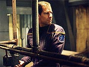
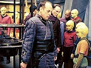
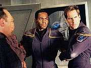
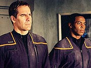
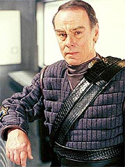
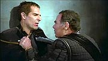
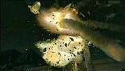
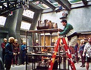
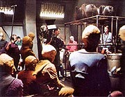

|

|
|
MANCHETE
DO EPISDIO
Dean
Stockwell, filosofia simples e
muita aventura do bons resultados
Episdio
anterior | Prximo
episdio
Sinopse:
Archer e Mayweather acordam
deitados em colches pouco confortveis em um salo
mal-iluminado e com altas janelas engradadas. Eles no tm idia
do que esto fazendo ali; sua ltima lembrana foi a de terem
seu shuttlepod abatido por aliengenas, enquanto investigavam
estranhas leituras em uma lua. Do lado de fora do salo, eles
encontram dezenas de Sulibans, e a dupla logo conclui que a Cabal
tem algo a ver com sua presena ali.
Eles confrontam uma velha Suliban, quando um alarme soa pelos
corredores. Rapidamente, cada Suliban sai de seu alojamento e se
alinha diante da porta, no corredor onde esto Archer e
Mayweather. Em seguida, aliengenas bem parecidos com os humanos,
claramente parte de uma fora militar, entram no recinto. Eles
esto fazendo revistas nos Sulibans, e se dirigem para Archer.
 Os militares
pedem que o capito e Mayweather os acompanhem. Eles so levados
ao coronel Grat, o administrador daquela instalao --um campo
de concentrao montado por sua espcie, os Tandarans, para
conter a ameaa da Cabal Suliban. Grat lamenta pela situao em
que ele se apresenta a Archer e Mayweather e revela que os dois
esto ali por terem trespassado rea militar Tandaran com seu
shuttlepod. Uma audincia ser realizada em Tandar Prime em trs
dias, quando eles sero liberados pela Justia. At l, eles
devem permanecer no campo de concentrao. Grat os aconselha a
tomar cuidado com os Sulibans e aguardar pacificamente a chegada
do transporte que os levar a Tandar Prime. Archer pede para se
comunicar com a Enterprise, ao menos para avisar da situao,
mas Grat diz que isso no permitido. Mesmo assim, o coronel se
compromete a contatar a Enterprise pessoalmente e comunicar o
ocorrido.
Archer e Mayweather voltam priso e procuram ficar longe dos
Sulibans. No fim da noite, Archer vai buscar gua em uma torneira
no muito longe de seus alojamentos e encontra um Suliban com sua
filha. Revoltado, ele pergunta como aquele sujeito teve a coragem
de j permitir que sua filha entrasse para a Cabal. O sujeito,
Danik, diz que Archer no sabe do que est falando. Naquele
momento, dado o toque de recolher, mas a discusso entre Danik
e Archer acaba atrasando o Suliban. Quando os oficiais Tandarans
entram no campo, ele ainda est ali, longe de seu alojamento.
Como punio por no respeitar o toque de recolher, ele ser
levado para a solitria, dizem os guardas. Archer tenta intervir,
dizendo que foi culpado pelo atraso de Danik, mas o guarda no
quer nem saber. A filha de Danik levada aos alojamentos dele e
o Suliban vai para a solitria.
Na volta de Danik, Archer est intrigado pela situao, pois
parece que o Suliban no fez nada errado. Ele decide se aproximar
e perguntar a Danik o que est havendo. O Suliban revela que
todos esto presos ali apenas por serem de sua raa, embora
nenhum deles faa parte da Cabal ou seja geneticamente alterado.
O planeta-natal Suliban se tornou inabitvel h 300 anos e
muitos de sua espcie colonizaram pacificamente mundos do setor
Tandaran. At que, h oito anos, a Cabal iniciou sua onda de
terror, atacando os Tandarans e trazendo a morte. O resultado foi
que os aliengenas decidiram manter todos os Sulibans, inclusive
os no-envolvidos com a Cabal, em campos de concentrao, sob a
justificativa de os estar "protegendo".
 Percebendo
o sofrimento de Danik, que est sem ver a esposa desde que os
dois foram separados e enviados para diferentes campos de
concentrao, Archer comea a se revoltar com a atitude dos
Tandarans. A conversa entre ele Danik interrompida quando
soa o alarme de mais uma revista. Os guardas novamente vo at
Archer e dizem que Grat quer v-lo. Mas desta vez, Mayweather no
pode acompanh-lo.
Archer levado a Grat, e o coronel revela algumas descobertas
que fez sobre o passado do capito da Enterprise com os Sulibans.
Grat pressiona Archer para obter mais informaes sobre Silik,
Sarin, a Guerra Fria Temporal, a Hlice e a Cabal, mas o capito
prefere no revelar nada, em vez disso questionando o general
pelo aprisionamento sumrio dos Sulibans inocentes. Insatisfeito
com a falta de cooperao de Archer, Grat decide impedi-lo de ir
a Tandar Prime para ser liberado. A prxima oportunidade s
viria em 60 dias.
O capito volta ao campo de concentrao e pergunta a Danik se
nunca ningum tentou escapar dali. O Suliban revelou que houve
uma tentativa fracassada, que resultou na morte de trs detentos,
mas Archer rebateu dizendo que, se tivessem ajuda externa, eles
teriam conseguido, adicionando que a Enterprise logo viria
procura dele e de Mayweather. Logo ele e Danik comeam a
trabalhar em um plano de fuga em massa. Aps sair do campo, os
Sulibans fugiriam usando suas velhas naves, armazenadas a uns cem
metros dali.
 Enquanto isso,
Grat contata a Enterprise e avisa que haver um atraso no
julgamento de Archer e Mayweather. T'Pol, no comando da nave,
decide seguir o conselho de Tucker e investigar sobre o paradeiro
do capito, a partir do rastreio da origem do sinal emitido por
Grat. Logo eles esto prximos do planeta em que o campo de
concentrao est instalado. Aps localizar Archer e
Mayweather com os sensores, eles transportam um comunicador, com o
qual fazem contato com o capito.
Archer informa T'Pol sobre a situao e revela que pretende
ajudar os Sulibans a fugir. Juntos, eles bolam um plano para
ajudar os detentos. Enquanto T'Pol contata Grat, sob o pretexto de
convid-lo para um jantar a bordo, ela sobrecarrega o sistema
Tandaran enviando o banco de dados completo da Enterprise, sob uma
falsa bandeira de cooperao. Com o sistema de sensores Tandaran
temporariamente desativado, eles teleportam Malcolm Reed, disfarado
como um Suliban, para o campo de concentrao.
Enquanto isso, Archer chamado mais uma vez ao escritrio de
Grat. O coronel informa ao capito que um trao de energia havia
sido detectado pelos sensores na noite passada, proveniente de seu
alojamento. Archer nega ter qualquer conhecimento do que se
tratava, mas Grat est um passo adiante. Ele aperta um boto e
oficiais Tandarans trazem Mayweather, devidamente espancado,
sala do general. Grat diz que seus homens encontraram um
comunicador no bolso do piloto de Archer, mas avisa que todo e
qualquer movimento ser intil.
Mayweather devolvido ao alojamento, mas Archer levado
solitria. Reed, disfarado e j na superfcie, vai ao
encontro do alferes, onde os dois, aliados a Danik, planejam os
detalhes da fuga dos Sulibans e da libertao de Archer. Depois
de implantar uma bomba que permitiria que os Sulibans escapassem,
Reed se dedica tarefa de resgatar o capito na solitria.
Enquanto isso, a Enterprise enfrenta foras Tandarans em rbita,
e Tucker, a bordo de um shuttlepod, destri a infra-estrutura
Tandaran no campo de concentrao, facilitando a fuga.
 Reed
consegue encontrar o capito, mas quando os dois esto saindo,
ele surpreendido por Grat. O coronel pe Reed a nocaute e diz
a Archer que ele no tem a menor idia do que acaba de fazer,
ajudando os Sulibans a fugir. Grat parece estar realmente disposto
a acertar o capito, mas no tem tempo, pois Reed logo se
recupera e ajuda Archer a desarm-lo. Com isso, a fuga deles e
dos Sulibans tem sucesso. Em rbita, a Enterprise conseguiu
superar suas dificuldades com as naves Tandarans e est pronta
para receber o shuttlepod com seus tripulantes. Os Sulibans
fugiram em suas naves para alm do setor Tandaran. Mesmo assim,
Archer completa sua misso incerto de que os prisioneiros que ele
acaba de libertar tenham um futuro brilhante pela frente...
Comentrios:
"Detained" um episdio que merece
destaque por fugir ao ritmo usual de Enterprise. Ao contrrio
do que se viu na maior parte da primeira temporada, temos aqui um
segmento que combina de forma efetiva ao, ritmo acelerado, um
bom enredo e uso interessante dos personagens principais.
 Quem v a
premissa do segmento, antecipa mais uma tentativa, bem no estilo Jornada
nas Estrelas, de impor uma moral ou uma mensagem especficas
via uma metfora. Embora ela no deixe de estar presente, no
o que mais chama a ateno. A tal "mensagem" do
episdio bastante bvia e bem conectada a fatos contemporneos,
de forma que no produz nenhum tipo de discusso filosfica.
Alguns identificam um defeito nisso, mas na verdade tudo uma
questo de ponto de vista. Ao simplificar um potencial dilema, os
produtores puderam se concentrar na aventura, o que neste caso
funcionou. Ademais, nem sempre uma questo filosfica precisa
ser "insolvel" para ser vlida.
Em poucas palavras, tudo que ela diz : "no julgue os
outros por sua aparncia, ou condene um grupo pela culpa de uns
poucos s porque todos so parecidos". Nada que no seja
escandalosamente bvio para um f de Jornada que h mais
de 35 anos aprecia a mensagem de valorizao das diferenas,
que est embebida no prprio conceito da srie. Entretanto, em
tempos como os que a humanidade vive no momento da exibio
deste episdio, no d para dizer que a mensagem, colocada
mesmo de forma subliminar na cabea das pessoas, no seja
importante. De certa forma, "Detained" pode no
ser o supra-sumo do drama televisivo (certamente no ), mas
ajuda a manter a chama acesa de Jornada enquanto um veculo de
mobilizao e conscientizao social.
Parece um insulto inteligncia do telespectador, mas no .
Existe uma necessidade constante de reforar em uma pessoa que
perdeu um ente querido no World Trade Center a idia de que um rabe
no por definio um inimigo; preciso o tempo todo
lembrar s pessoas que a guerra deve ser travada contra os atos
terroristas, no contra o grupo tnico ao qual pertencem as
pessoas que os perpetuam; preciso sempre relembrar os terrores
da Segunda Guerra Mundial, por mais escandalosos e bvios que
eles sejam, para evitar que novos ditadores de extrema direita
consigam chegar ao poder com um falso discurso populista, como o
que est quase acontecendo na Frana agora, em pleno sculo 21.
 Se
a idia criticar o quanto essas coisas todas so absurdas, ou
reforar o esprito humano que deve prevalecer em situaes
como essas, considero totalmente vlido o uso de uma metfora
que bvia e que no faz um esforo tremendo em gerar
conflito e, por consequncia, bom drama de televiso. Estou
satisfeito com o impacto social que a simples mensagem pode ter na
populao que acompanhar o episdio.
Tirando essa crtica da frente, podemos agora nos dedicar a
apreciar e elogiar "Detained". A comear pelo
uso dos personagens. Finalmente Mayweather tem de fazer alguma
coisa importante, aps 21 episdios! at uma sensao
estranha acompanhar o personagem caminhando sozinho pelo campo de
concentrao. O primeiro pensamento que passa pela cabea da
audincia , "Por que diabos estou seguindo esse 'camisa
vermelha'?".
Mas esse o preldio da descoberta do piloto pela audincia.
Travis tem alguns momentos preciosos aqui, principalmente quando
atua na ausncia de seu capito. Aparentemente, a ausncia de
Archer inibe o piloto; voc quase pode ouvir seu pensamento:
"Ufa, o capito est aqui, no preciso decidir nada e o
que eu precisar falar, ele vai falar por mim".
 Aqui, nem sempre
Archer est por perto, e Mayweather tem algumas chances, como a
em que trava um belo e agressivo dilogo com Sajen, o colega de
Danik na priso. Finalmente descobrimos que o piloto tem brios e
alguma personalidade! J no era sem tempo.
Archer no apresenta grandes surpresas com relao sua
caracterizao --o que infelizmente no uma boa notcia.
Mais uma vez vemos um capito que parece no refletir muito
sobre as consequncias de suas aes. Tudo que o guia a noo
do que certo e do que errado, e ele toma suas decises sem
mesmo poder se assegurar do que correto de fato. Por mais que a
situao parece injusta para com os Sulibans detidos, ele
conhece muito pouco da realidade local para fazer um julgamento. No
so as declaraes de Danik, que poderiam muito bem ser falsas,
que resolvem o problema sobre quem tem razo.
De toda forma, ele continua sendo um sujeito simptico e com quem
podemos nos identificar, ou, ao menos, torcer por. O que tudo
que importa aqui, num episdio em que o vilo claramente se expe,
sem precisarmos pensar muito sobre quem tem razo. Grat aparece
inicialmente como uma figura simptica e at razovel, mas nas
seguidas reunies com Archer ele se revela um militar no muito
diferente de seus subordinados, que maltratam os Sulibans na priso.
Embora ele fique claramente exposto como vilo, ainda assim seu
personagem bem construdo, graas principalmente atuao
viva e vibrante de Dean Stockwell. O personagem lhe caiu muito
bem, e Stockwell conseguiu imprimir certa dignidade ao coronel.
Chegamos at a pensar se ele realmente no acredita estar
protegendo os Sulibans ao mant-los em cativeiro. E claramente
Grat no movido por sentimentos malvolos; ele
simplesmente um militar, tentando fazer seu trabalho da mesma
forma possvel.
 Talvez
esse seja o melhor aspecto filosfico a ser abordado em "Detained".
Embora seja o vilo, Grat pode muito bem ser um sujeito bem
intencionado. Trata-se de mais um aviso humanidade do sculo
21 de que, de boas intenes, o inferno est cheio. preciso
um esforo contnuo de racionalizao e combate aos
preconceitos para que no cheguemos ao ponto de levar homens bons
a defender situaes absurdas. J aconteceu antes (o prprio
episdio cita a situao como similar aos campos feitos para
asiticos-americanos durante a Segunda Guerra Mundial nos EUA).
Pode muito bem acontecer de novo.
O roteiro introduz vrios detalhes histricos sobre os Sulibans,
que enriquecem o background dessa raa no contexto da srie. Alm
disso, h uma citao intensa dos eventos de "Broken
Bow" e de "Cold
Front" aqui, colocando o episdio facilmente na
lista do arco da Guerra Fria Temporal. Apesar disso, no
aprendemos nada sobre esse conflito em si, exceto pelo fato de que
os Tandarans parecem estar muito bem informados a respeito da
situao e ter uma equipe de inteligncia e espionagem
extremamente competente. Com base no que vimos aqui, os Tandarans
bem poderiam se tornar uma parte ativa nesse conflito --o que
seria uma tima desculpa para vermos Dean Stockwell novamente em
um futuro episdio...
A poro do episdio que se passa na Enterprise no muito
grande, mas extremamente significativa. T'Pol mostra mais e mais
desenvoltura como uma capit interina, ganhando a confiana da
tripulao (apesar dos sempre constantes questionamentos de
Tucker). Mas, exceto por ela e por Reed, que tem a chance de se
fantasiar de Suliban para se infiltrar no campo de concentrao,
ningum mais tem um papel importante na trama.
Apesar disso, h muita ao para os figurantes sem fala. Com
Tucker em um shuttlepod, Mayweather e Archer presos e Reed a
caminho do resgate, a ponte da Enterprise fica cheia de
figurantes. Eles no ficam s parados por l, ocupando espao,
mas participam ativamente da histria, conduzindo a nave e
disparando torpedos. uma sensao bem estranha para a audincia
--possivelmente a primeira vez que figuras desconhecidas atuam de
forma to significativa na srie.
Outras figuras pouco familiares, os Sulibans do episdio, so
muito bem retratados, e os atores convidados fazem um trabalho de
qualidade. Especialmente Dennis Christopher, que d uma bela
dimenso e verossimilhana a Danik.
 Mas nada supera a
empolgao da sequncia final, com a Enterprise entrando na
alta atmosfera do planeta, Mayweather conduzindo os fugitivos
pelos corredores e Reed indo ao resgate de Archer, gerando um ltimo
confronto entre o capito e Grat --possivelmente a melhor cena de
todo o episdio, e uma patente demonstrao da qumica entre
Scott Bakula e Dean Stockwell. Tudo isso salpicado por uma cena
que demonstra todo o poder das imagens geradas por computador, com
Tucker e seu shuttlepod botando para quebrar nas instalaes
Tandarans. Literalmente uma concluso explosiva, que deixa a audincia
querendo mais.
com esse esprito que chegamos ao fim de "Detained"
--querendo mais. Por mais que se critique o enredo, a filosofia
barata ou os personagens, no todo episdio que consegue
imprimir essa sensao. Claramente, histrias que trabalham com
a continuidade e os arcos contnuos da srie fazem bem o
franchise. Aqui o roteiro funciona nos dois sentidos --tanto como
parte de um contexto maior, que abrange a srie toda, quanto como
um episdio "stand-alone". Nada mal mesmo.
Citaes:
T'Pol - "If
you want to explore alien cultures, you'll need to learn to
respect their laws."
("Se voc quer explorar culturas aliengenas, voc
precisar aprender a respeitar suas leis.")
T'Pol - "I thought you decided not to interfere with other
cultures."
("Eu pensei que voc havia decidido no interferir com
outras culturas.")
Archer - "In this case I'm making an exception."
("Neste caso estou fazendo uma exceo.")
Reed - "Congratulations, ensign. Your case is about to be
dismissed."
("Parabns, alferes. Seu caso est para ser
encerrado.")
Reed - "Tell the doctor to meet us in sickbay. My skin is
really starting to itch."
("Diga ao doutor para nos encontrar na enfermaria. Minha pele
est realmente comeando a coar.")
Trivia:
 Dean Stockwell um
ator bastante conhecido. Alm de j ter sido indicado a um
Oscar, ele famoso ao lado de Scott Bakula, tendo protagonizado
com ele a srie "Quantum Leap"
("Contratempos").
Dean Stockwell um
ator bastante conhecido. Alm de j ter sido indicado a um
Oscar, ele famoso ao lado de Scott Bakula, tendo protagonizado
com ele a srie "Quantum Leap"
("Contratempos").
Nas primeiras verses
do roteiro, os Tandarans eram chamados de Mazarites.
Embora tenha tido apenas
uma pequena cena em todo o episdio, John Billingsley comentou o
trabalho. "Temos outro episdio Suliban vindo a, mas no
os Sulibans temporais. H Sulibans bonzinhos neste episdio."
Segundo o
produtor-executivo Brannon Braga, essa era uma grande oportunidade
para voltar a reunir Dean Stockwell e Scott Bakula. "Dean
Stockwell est fazendo um grande vilo contra Scott Bakula. Ele
administra a priso onde Sulibans inocentes esto sendo
mantidos. Archer e esse cara tm uma srie de cenas bem filosficas.
Parecia o episdio perfeito para pedir a Dean Stockwell para faz-lo,
e ele muito generosamente concordou."
Bakula comentou sobre as
relaes entre este episdio e o mundo contemporneo.
"Archer e Mayweather se vem em o que de fato uma verso
espacial de um campo de concentrao cercados por Sulibans, e so
forados a confrontar seus sentimentos de preconceito. Obviamente
isso espelha algumas das experincias sobre os quais estamos
lendo sobre encontros com rabes-americanos desde o 11 de
setembro."
Stockwell v com bons
olhos uma segunda apario em Enterprise. "O
personagem que interpreto no morre no fim, ento uma porta
bem aberta para ter o retorno do personagem."
a primeira apario de Stockwell em Jornada. Em compensao,
Christopher Shea j apareceu como o Vorta Keevan em dois episdios
de Deep Space Nine, e como Saowin, em "Think Tank",
de Voyager. Dennis Christopher interpretou antes o Vorta
Borath, em "The
Search, Part II", de Deep Space Nine.
Ficha
tcnica:
Histria de Rick Berman
& Brannon Braga
Roteiro de Mike Sussman & Phyllis Strong
Direo de David Livingston
Exibido em 24/04/2002
Produo:
021
Elenco:
Scott
Bakula como Jonathan Archer
Jolene Blalock como
T'Pol
John Billingsley
como Phlox
Anthony Montgomery
como Travis Mayweather
Connor Trinneer como
Charlie 'Trip' Tucker III
Dominic Keating como
Malcolm Reed
Linda Park como Hoshi Sato
Elenco convidado:
Dennis Christopher como Danik
Christopher Shea como Sajen
David Kagen como major Klev
Jessica D. Stone como Narra
Dean Stockwell como coronel Grat
Wilda Taylor como mulher
Episdio
anterior | Prximo
episdio
|
|